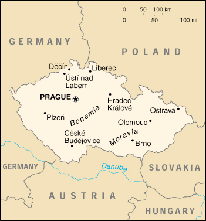

|
Czech Republic | |
| Introduction Geography People Government Economy Communications Transportation Military Transnational Issues | ||
|  | ||
| Czech Republic | Introduction | Top of Page |
| Background: | After World War II, Czechoslovakia fell within the Soviet sphere of influence. In 1968, an invasion by Warsaw Pact troops ended the efforts of the country's leaders to liberalize party rule and create "socialism with a human face." Anti-Soviet demonstrations the following year ushered in a period of harsh repression. With the collapse of Soviet authority in 1989, Czechoslovakia regained its freedom through a peaceful "Velvet Revolution." On 1 January 1993, the country underwent a "velvet divorce" into its two national components, the Czech Republic and Slovakia. Now a member of NATO, the Czech Republic has moved toward integration in world markets, a development that poses both opportunities and risks. |
| Czech Republic | Geography | Top of Page |
| Location: | Central Europe, southeast of Germany |
| Geographic coordinates: | 49 45 N, 15 30 E |
| Map references: | Europe |
| Area: |
total:
78,866 sq km
land: 77,276 sq km water: 1,590 sq km |
| Area - comparative: | slightly smaller than South Carolina |
| Land boundaries: |
total:
1,881 km
border countries: Austria 362 km, Germany 646 km, Poland 658 km, Slovakia 215 km |
| Coastline: | 0 km (landlocked) |
| Maritime claims: | none (landlocked) |
| Climate: | temperate; cool summers; cold, cloudy, humid winters |
| Terrain: | Bohemia in the west consists of rolling plains, hills, and plateaus surrounded by low mountains; Moravia in the east consists of very hilly country |
| Elevation extremes: |
lowest point:
Elbe River 115 m
highest point: Snezka 1,602 m |
| Natural resources: | hard coal, soft coal, kaolin, clay, graphite, timber |
| Land use: |
arable land:
41%
permanent crops: 2% permanent pastures: 11% forests and woodland: 34% other: 12% (1993 est.) |
| Irrigated land: | 240 sq km (1993 est.) |
| Natural hazards: | flooding |
| Environment - current issues: | air and water pollution in areas of northwest Bohemia and in northern Moravia around Ostrava present health risks; acid rain damaging forests |
| Environment - international agreements: |
party to:
Air Pollution, Air Pollution-Nitrogen Oxides, Air Pollution-Sulphur 85, Air Pollution-Sulphur 94, Air Pollution-Volatile Organic Compounds, Antarctic Treaty, Biodiversity, Climate Change, Desertification, Endangered Species, Environmental Modification, Hazardous Wastes, Law of the Sea, Nuclear Test Ban, Ozone Layer Protection, Ship Pollution, Wetlands
signed, but not ratified: Air Pollution-Persistent Organic Pollutants, Antarctic-Environmental Protocol, Climate Change-Kyoto Protocol |
| Geography - note: | landlocked; strategically located astride some of oldest and most significant land routes in Europe; Moravian Gate is a traditional military corridor between the North European Plain and the Danube in central Europe |
| Czech Republic | People | Top of Page |
| Population: | 10,264,212 (July 2001 est.) |
| Age structure: |
0-14 years:
16.09% (male 847,219; female 804,731)
15-64 years: 69.99% (male 3,592,984; female 3,590,802) 65 years and over: 13.92% (male 549,538; female 878,938) (2001 est.) |
| Population growth rate: | -0.07% (2001 est.) |
| Birth rate: | 9.11 births/1,000 population (2001 est.) |
| Death rate: | 10.81 deaths/1,000 population (2001 est.) |
| Net migration rate: | 0.96 migrant(s)/1,000 population (2001 est.) |
| Sex ratio: |
at birth:
1.06 male(s)/female
under 15 years: 1.05 male(s)/female 15-64 years: 1 male(s)/female 65 years and over: 0.63 male(s)/female total population: 0.95 male(s)/female (2001 est.) |
| Infant mortality rate: | 5.55 deaths/1,000 live births (2001 est.) |
| Life expectancy at birth: |
total population:
74.73 years
male: 71.23 years female: 78.43 years (2001 est.) |
| Total fertility rate: | 1.18 children born/woman (2001 est.) |
| HIV/AIDS - adult prevalence rate: | 0.04% (1999 est.) |
| HIV/AIDS - people living with HIV/AIDS: | 2,200 (1999 est.) |
| HIV/AIDS - deaths: | less than 100 (1999 est.) |
| Nationality: |
noun:
Czech(s)
adjective: Czech |
| Ethnic groups: | Czech 81.2%, Moravian 13.2%, Slovak 3.1%, Polish 0.6%, German 0.5%, Silesian 0.4%, Roma 0.3%, Hungarian 0.2%, other 0.5% (1991) |
| Religions: | atheist 39.8%, Roman Catholic 39.2%, Protestant 4.6%, Orthodox 3%, other 13.4% |
| Languages: | Czech |
| Literacy: |
definition:
NA
total population: 99.9% (1999 est.) male: NA% female: NA% |
| Czech Republic | Government | Top of Page |
| Country name: |
conventional long form:
Czech Republic
conventional short form: Czech Republic local long form: Ceska Republika local short form: Ceska Republika |
| Government type: | parliamentary democracy |
| Capital: | Prague |
| Administrative divisions: | 13 regions (kraje, singular - kraj) and 1 capital city* (hlavni mesto); Brnensky, Budejovicky, Jihlavsky, Karlovarsky, Kralovehradecky, Liberecky, Olomoucky, Ostravsky, Pardubicky, Plzensky, Praha*, Stredocesky, Ustecky, Zlinsky |
| Independence: | 1 January 1993 (Czechoslovakia split into the Czech Republic and Slovakia) |
| National holiday: | Czech Founding Day, 28 October (1918) |
| Constitution: | ratified 16 December 1992; effective 1 January 1993 |
| Legal system: | civil law system based on Austro-Hungarian codes; has not accepted compulsory ICJ jurisdiction; legal code modified to bring it in line with Organization on Security and Cooperation in Europe (OSCE) obligations and to expunge Marxist-Leninist legal theory |
| Suffrage: | 18 years of age; universal |
| Executive branch: |
chief of state:
President Vaclav HAVEL (since 2 February 1993)
head of government: Prime Minister Milos ZEMAN (since 17 July 1998); Deputy Prime Ministers Vladimir SPIDLA (since 22 July 1998), Pavel RYCHETSKY (since 22 July 1998), Jan KAVAN (since 8 December 1999) cabinet: Cabinet appointed by the president on the recommendation of the prime minister elections: president elected by Parliament for a five-year term; election last held 20 January 1998 (next to be held NA January 2003); prime minister appointed by the president election results: Vaclav HAVEL reelected president; Vaclav HAVEL received 47 of 81 votes in the Senate and 99 out of 200 votes in the Chamber of Deputies (second round of voting) |
| Legislative branch: |
bicameral Parliament or Parlament consists of the Senate or Senat (81 seats; members are elected by popular vote to serve six-year terms; one-third elected every two years) and the Chamber of Deputies or Poslanecka snemovna (200 seats; members are elected by popular vote to serve four-year terms)
elections: Senate - last held 12 and 19 November 2000 (next to be held NA November 2002); Chamber of Deputies - last held 19-20 June 1998 (next to be held by NA June 2002) election results: Senate - percent of vote by party - NA%; seats by party - KDU-CSL 28, ODS 22, CSSD 15, ODA 7, US 4, KSCM 3, independents 2; Chamber of Deputies - percent of vote by party - CSSD 32.3%, ODS 27.7%, KSCM 11%, KDU-CSL 9.0%, US 8.6%; seats by party - CSSD 74, ODS 63, KSCM 24, KDU-CSL 20, US 18, CSNS 1 |
| Judicial branch: | Supreme Court; Constitutional Court; chairman and deputy chairmen are appointed by the president for a 10-year term |
| Political parties and leaders: | Christian and Democratic Union-Czechoslovak People's Party or KDU-CSL [Jan KASAL, chairman]; Civic Democratic Alliance or ODA [Daniel KROUPA, chairman]; Civic Democratic Party or ODS [Vaclav KLAUS, chairman]; Communist Party of Bohemia and Moravia or KSCM [Miroslav GREBENICEK, chairman]; Communist Party of Czechoslovakia or KSC [Miroslav STEPAN, chairman]; Czech National Social Party of CSNS [Jan SULA, chairman]; Czech Social Democratic Party or CSSD [Milos ZEMAN, chairman]; Democratic Union or DEU [Ratibor MAJZLIK, chairman]; Freedom Union or US [Karel KUEHNL, chairman]; Quad Coalition [Cyril SVOBODA, chairman] (includes KDU-CSL, US, ODA, DEU); Republicans of Miroslav SLADEK or RMS [Miroslav SLADEK, chairman] |
| Political pressure groups and leaders: | Czech-Moravian Confederation of Trade Unions [Richard FALBR] |
| International organization participation: | ACCT (observer), Australia Group, BIS, CCC, CE, CEI, CERN, EAPC, EBRD, ECE, EU (applicant), FAO, IAEA, IBRD, ICAO, ICC, ICFTU, ICRM, IDA, IEA, IFC, IFRCS, ILO, IMF, IMO, Inmarsat, Intelsat, Interpol, IOC, IOM, ISO, ITU, MONUC, NATO, NEA, NSG, OAS (observer), OECD, OPCW, OSCE, PCA, PFP, UN, UNCTAD, UNESCO, UNIDO, UNMEE, UNMIBH, UNMIK, UNMOP, UNMOT, UNOMIG, UPU, WCL, WEU (associate), WFTU, WHO, WIPO, WMO, WToO, WTrO, ZC |
| Diplomatic representation in the US: |
chief of mission:
Ambassador Alexsandr VONDRA
chancery: 3900 Spring of Freedom Street NW, Washington, DC 20008 telephone: [1] (202) 274-9100 FAX: [1] (202) 966-8540 consulate(s) general: Los Angeles and New York |
| Diplomatic representation from the US: |
chief of mission:
Ambassador (vacant); Charge d'Affaires Steven J. COFFEY
embassy: Trziste 15, 11801 Prague 1 mailing address: use embassy street address telephone: [420] (2) 5753-0663 FAX: [420] (2) 5753-0583 |
| Flag description: | two equal horizontal bands of white (top) and red with a blue isosceles triangle based on the hoist side (identical to the flag of the former Czechoslovakia) |
| Czech Republic | Economy | Top of Page |
| Economy - overview: | Basically one of the most stable and prosperous of the post-Communist states, the Czech Republic has been recovering from recession since mid-1999. The economy grew about 2.5% in 2000 and should achieve somewhat higher growth in 2001. Growth is led by exports to the EU, especially Germany, and foreign investment, while domestic demand is reviving. Uncomfortably high fiscal and current account deficits could be future problems. Unemployment is down to 8.7% as job creation continues in the rebounding economy; inflation is up to 3.8% but still moderate. The EU put the Czech Republic just behind Poland and Hungary in preparations for accession, which will give further impetus and direction to structural reform. Moves to complete banking, telecommunications and energy privatization will add to foreign investment, while intensified restructuring among large enterprises and banks and improvements in the financial sector should strengthen output growth. |
| GDP: | purchasing power parity - $132.4 billion (2000 est.) |
| GDP - real growth rate: | 2.5% (2000 est.) |
| GDP - per capita: | purchasing power parity - $12,900 (2000 est.) |
| GDP - composition by sector: |
agriculture:
3.7%
industry: 41.8% services: 54.5% (1999) |
| Population below poverty line: | NA% |
| Household income or consumption by percentage share: |
lowest 10%:
4.3%
highest 10%: 22.4% (1996) |
| Inflation rate (consumer prices): | 3.8% (2000 est.) |
| Labor force: | 5.203 million (1999 est.) |
| Labor force - by occupation: | agriculture 5%, industry 40%, services 55% (2000 est.) |
| Unemployment rate: | 8.7% (2000 est.) |
| Budget: |
revenues:
$16.7 billion
expenditures: $18 billion, including capital expenditures of $NA (2001 est.) |
| Industries: | metallurgy, machinery and equipment, motor vehicles, glass, armaments |
| Industrial production growth rate: | 7.6% (2000) |
| Electricity - production: | 67.642 billion kWh (2000) |
| Electricity - production by source: |
fossil fuel:
77.8%
hydro: 3.43% nuclear: 18.77% other: 0% (2000) |
| Electricity - consumption: | 52.898 billion kWh (2000) |
| Electricity - exports: | 18.744 billion kWh (2000) |
| Electricity - imports: | 8.735 billion kWh (2000) |
| Agriculture - products: | wheat, potatoes, sugar beets, hops, fruit; pigs, poultry |
| Exports: | $28.3 billion (f.o.b., 2000) |
| Exports - commodities: | machinery and transport equipment 44%, other manufactured goods 40%, chemicals 7%, raw materials and fuel 7% (1999) |
| Exports - partners: | Germany 43%, Slovakia 8.4%, Austria 6.6%, Poland 5.6%, France 4% (1999) |
| Imports: | $31.4 billion (f.o.b., 2000) |
| Imports - commodities: | machinery and transport equipment 42%, other manufactured goods 33%, chemicals 12%, raw materials and fuels 10% (1999) |
| Imports - partners: | Germany 37.5%, Slovakia 6.7%, Austria 6.2%, Italy 5.9%, France 5.4% (1999) |
| Debt - external: | $21.3 billion (2000) |
| Economic aid - recipient: | $NA |
| Currency: | Czech koruna (CZK) |
| Currency code: | CZK |
| Exchange rates: | koruny per US dollar - 37.425 (January 2001), 38.598 (2000), 34.569 (1999), 32.281 (1998), 31.698 (1997), 27.145 (1996) |
| Fiscal year: | calendar year |
| Czech Republic | Communications | Top of Page |
| Telephones - main lines in use: | 3.869 million (2000) |
| Telephones - mobile cellular: | 4.346 million (2000) |
| Telephone system: |
general assessment:
privatization and modernization of the Czech telecommunication system got a late start but is advancing steadily; growth in the use of mobile cellular telephones is particularly vigorous
domestic: 86% of exchanges now digital; existing copper subscriber systems now being enhanced with Asymmetric Digital Subscriber Line (ADSL) equipment to accommodate Internet and other digital signals; trunk systems include fiber-optic cable and microwave radio relay international: satellite earth stations - 2 Intersputnik (Atlantic and Indian Ocean regions), 1 Intelsat, 1 Eutelsat, 1 Inmarsat, 1 Globalstar |
| Radio broadcast stations: | AM 31, FM 304, shortwave 17 (2000) |
| Radios: | 3,159,134 (December 2000) |
| Television broadcast stations: | 150 (plus 1,434 repeaters) (2000) |
| Televisions: | 3,405,834 (December 2000) |
| Internet country code: | .cz |
| Internet Service Providers (ISPs): | more than 300 (2000) |
| Internet users: | 900,000 (2000) |
| Czech Republic | Transportation | Top of Page |
| Railways: |
total:
9,444 km
standard gauge: 9,350 km 1.435-m standard gauge (2,843 km electrified; 1,929 km double track) narrow gauge: 94 km 0.760-m narrow gauge (2000) |
| Highways: |
total:
55,432 km
paved: 55,432 km (including 499 km of expressways) unpaved: 0 km (2000) |
| Waterways: |
303 km
note: (the Labe (Elbe) is the principal river) (2000) |
| Pipelines: | natural gas 3,550 km (2000) |
| Ports and harbors: | Decin, Prague, Usti nad Labem |
| Airports: | 114 (2000 est.) |
| Airports - with paved runways: |
total:
43
over 3,047 m: 2 2,438 to 3,047 m: 10 1,524 to 2,437 m: 14 914 to 1,523 m: 1 under 914 m: 16 (2000 est.) |
| Airports - with unpaved runways: |
total:
71
1,524 to 2,437 m: 1 914 to 1,523 m: 28 under 914 m: 42 (2000 est.) |
| Heliports: | 1 (2000 est.) |
| Czech Republic | Military | Top of Page |
| Military branches: | Army, Air and Air Defense Forces, Territorial Defense, Railroad Units |
| Military manpower - military age: | 18 years of age |
| Military manpower - availability: | males age 15-49: 2,653,456 (2001 est.) |
| Military manpower - fit for military service: | males age 15-49: 2,024,070 (2001 est.) |
| Military manpower - reaching military age annually: | males: 69,393 (2001 est.) |
| Military expenditures - dollar figure: | $1.2 billion (FY01) |
| Military expenditures - percent of GDP: | 2.2% (FY01) |
| Czech Republic | Transnational Issues | Top of Page |
| Disputes - international: | Liechtenstein's royal family claims restitution for 1,600 sq km of land in the Czech Republic confiscated in 1918; individual Sudeten German claims for restitution of property confiscated in connection with their expulsion after World War II; Austria has minor dispute with Czech Republic over nuclear power plants and post-World War II treatment of German-speaking minorities |
| Illicit drugs: | major transshipment point for Southwest Asian heroin and minor transit point for Latin American cocaine to Western Europe; domestic consumption - especially of locally produced synthetic drugs - on the rise |
{kind=link}
{kind=link}